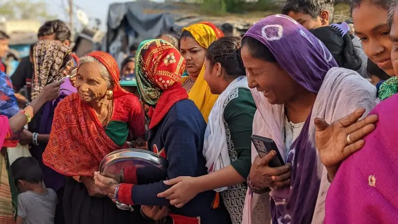

What Happens to the Clothes You Donate in Ahmedabad?

Every week, families across Ahmedabad and Vadodara hand over bags of clothes they no longer wear. A fair question usually follows: where do those clothes actually go? At India Recycles, the answer is a deliberate, four-step journey designed to keep every usable garment out of a landfill.
Step 1: Collection and hand sorting
Donated clothes reach us through drop locations, doorstep pickups and community drives. Every item is then checked by hand and sorted by type, size, season and condition. Nothing is treated as waste until a real person has assessed it, because a garment that looks tired to one household is often perfect for another.
Step 2: A dignified second life through Community Sales
Clothes in good, wearable condition are offered at our Community Sales, where families can buy quality pre-loved clothing at a small, affordable price. Charging a modest amount rather than giving clothes away is a choice we make on purpose. It protects the dignity of the buyer, who shops and chooses rather than receives, and it keeps the whole model self-sustaining.
Step 3: Upcycling with Re-Vibe and the Godadi Project
Garments that are too worn to resell are not thrown out. Through Re-Vibe, our upcycling label, usable fabric is given a new form and function. Under the Godadi Project, leftover material is stitched into warm quilts by women artisans, turning what would have been scrap into both comfort and livelihoods.
Step 4: Responsible recycling as the last resort
Only fabric that truly cannot be reused or upcycled reaches the final stage: responsible recycling. Keeping recycling as the last step, not the first, is what allows us to hold to our zero-waste promise.
Why the order matters
Reuse almost always saves more water, energy and raw material than recycling, because the garment stays whole and no energy is spent breaking it back down into fibre. That is why our model always asks the same question first: can this be worn again? You can see a rough estimate of the resources your own donations save using our free impact calculator.
Turn your unused clothes into impact
Drop them at a collection point near you, or request a doorstep pickup. Every usable garment gets a dignified second life.